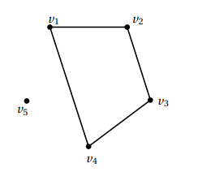
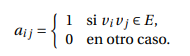

Figura 1
En esta figura se muestra una multigráfica con un lazo y dos aristas paralelas
Grafo dirigido
Por otro lado, un grafo dirigido G= (V, A) es un grafo cuyas aristas a= (v1, v2) ∈ A representan una conexión entre los dos vértices v1 y v2 en la dirección desde v 1 a v 2, usualmente denotada por una flecha que va desde v 1 hacia v 2. Luego, en un grafo dirigido, una arista nos entrega más información que una arista en un grafo no-dirigido.
Dos grafos G =(V, E) y G =(V ,E) son isomorfos si existen biyecciones, tanto entre sus vértices, como entre sus aristas, es decir, existen dos funciones biyectivas ϕ V : V → V y ϕ E : E → E , que satisfacen que e =(u, v) ∈ E si y sólo si ϕ E ( e )=( ϕ V ( u ) ,ϕ V ( v )) ∈ E . Por ejemplo, los grafos de la Figura 2.4 son isomorfos, pero distintos.
Figura 2.4
Figura 1.9
Un grafo es conexo si existe un camino entre cada par de vértices distintos del grafo. Por ejemplo, en la Figura 1.9, el grafo de la izquierda es conexo mientras que el grafo de la derecha no lo es, pues no existe un camino que conecte a los vértices 1, 2 o 3 con los vértices 4 o 5.
Un concepto muy importante en Teoría de las Gráficas es el de subgráfica. Una gráfica G´ Es subgráfica de G si el conjunto de los vértices de G´ es un subconjunto de los vértices de G y el conjunto de las aristas de G´ es un subconjunto de las aristas de G, es decir, si:
En esta figura se muestra la gráfica inducida G[A], donde A = {a,b,d,e, f }, y la subgráfica H con V (H) = {c,d,e, f , g } y E(H) = {cg ,dg ,de, g f }
Anteriormente mencionamos que toda gráfica puede representarse geométricamente mediante un dibujo formado por puntos y líneas. Sin embargo, en ocasiones es conveniente utilizar otro tipo de representación de la gráfica. Una manera muy útil de hacerlo es mediante una matriz. Dada una gráfica G = (V,E) con V = {v1, v2, ..., vn} se define la matriz de adyacencia A(G) de G como la matriz cuadrada de n×n definida por A(G) = [a ij], donde:
Vamos a necesitar construir nuevos grafos a partir de algunos ya existentes, para esto, definiremos las siguientes operaciones básicas sobre grafos que nos permitirán sumar o restar vértices y aristas a un grafo G =( V, E ) dado. Si V ⊂ V es un subconjunto (estricto) de vértices de G , entonces la diferencia entre G y V , denotada por G \ V , corresponde al grafo cuyos vértices son V \ V y sus aristas son las aristas E , menos las que inciden en algún vértice de V , es decir, E ( G \ V )= E ∩ ( V \ V ) × ( V \ V ) .
Diferencia entre un grafo y un conjunto de vértices. Izquierda: G , Derecha: G \{ 2 }
La suma de G y e, denotada por G + e, como el grafo obtenido al incluir la arista e en G . En la Figura 2.8 se ilustra la suma del grafo y la arista (2,5).
Figura 2.8
Suma entre un grafo y una arista. Izquierda: G, Derecha: G+(2 , 5)
Decimos que una gráfica G es ponderada si a cada arista e ∈ E(G) se le asocia un número w(e) al cual se le conoce como el peso de la arista. Si H es una subgráfica de una gráfica ponderada, el peso w(H) de H es la suma de los pesos de las aristas de H.